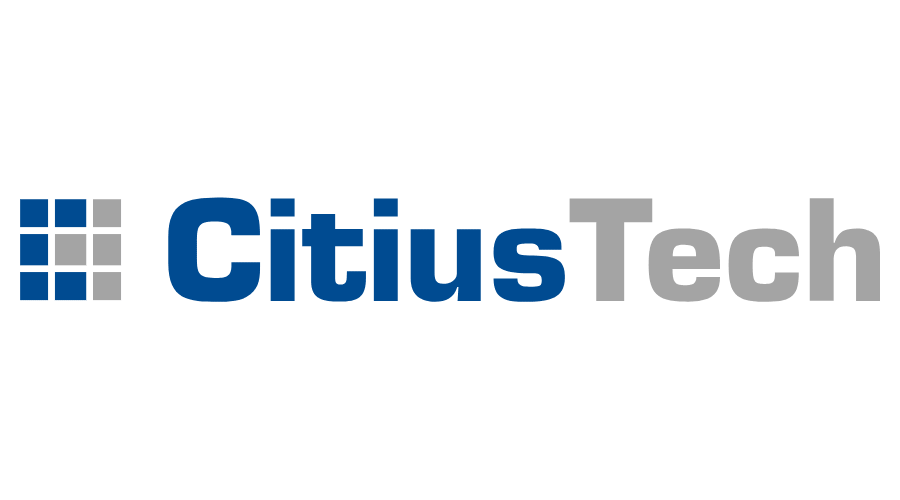

"Hi, I am Archit Nigam and I am currently pursuing my Master's in Information Systems at Northeastern University.
My foray into the world of Computer Science and Software Development began when I was 12 years old and I was
introduced to Object Oriented Programming. Since then, I haven't looked back and I have spent years
sharpening my skills and shaping my philosophy towards software development. Automation, Cloud, Machine Learning,
Artificial Intelligence are going to be the pillars of applications for next 10-20 years and
I plan to be at forefront of it.
Currently, I am focusing on my path to being the best Full-Stack developer I can be. Problem solving
skills are a necessity in today's work environment and there is nothing more satisfying than seeing yourself develop -
one day at a time. I firmly believe that technology can be used to solve global challenges like climate change, poverty,
equality, healthcare accessibility, geopolitical tensions and discrimination. As software developers, we must build
applications with an underlying vision of solving challenges of all kinds - from everyday problems
to those have existed as long as humanity as.
Problems of tomorrow need to be solved today.
However as Albert Einstein once famously said, "We will never be able to solve the problems of tomorrow with the thinking of today.”
"The World will be more progressive with creative, apposite and ethical use of Science
and Technology."
BOSTON, MASSACHUSETTS
EDUCATION:

WORK EXPERIENCE:
-

- CitiusTech Healthcare Private Limited:
- Software Engineer, Full-Time
- June 2018 - July 2021
- At CitiusTech, I helped product teams overhaul their test strategies and practices to ensure quality, timely delivered software. I aided teams to use modern processes like Test Automation and DevOps within the projects which decreased the development to production time while ensuring the quality of the products remained high. In 2020, I was a part of the team that implemented automated claims management workflow to deliver claim bills to millions of US citizens based in Arizona, Nevada, Oklahoma, and Florida.
SKILLS:

Front - End Technologies: HTML, CSS, jQuery, JavaScript, ReactJS, Angular

Back - End Technologies: Spring MVC, Spring Boot, Hibernate, REST API, Express JS, NodeJS
 Database Technologies: MySQL, Microsoft SQL Server, MongoDB
Database Technologies: MySQL, Microsoft SQL Server, MongoDB
 Cloud Technologies: Azure DevOps CI/CD, Sauce Labs, Jenkins, AWS IAM, AWS EC2
Cloud Technologies: Azure DevOps CI/CD, Sauce Labs, Jenkins, AWS IAM, AWS EC2
PROJECTS:
HOSPICE CARE MANAGEMENT SYSTEM:
Hospice Care Management System aims at improving the lives of patients suffering from terminal illness through accessible technology
and bringing all the participants of the system under one roof.
It includes 24*7 access to Providers, Nurses, and Counsellors for their diagnosis and treatment
via a centralized system and database. It also handles finacial transactions associated with
a medical institution like claims, donations and audit logging.
RESTAURANT AND FOOD DELIVERY DATABASE:
Restaurant and Food Delivery Database System is used to centralize
data of restaurants, customers, delivery partners and the associated workflows like dining, delivery, food wastage and
feedback under a single digital ecosystem.
The data in this system can be used to manage, analyze and predict the
trends of restaurant and food delivery industry along with its profitability and accessibility.
EDI 837 DECODER:
A PowerShell script that can decode a EDI 837. It provides healthcare claim details like Submitter information, Receiver information, Vendor information, Consumer information, Claim details, Claim Service details etc.
This decoding can save productivity of a user by 40-60 minutes a day of a user when developing features related
to claim management system.